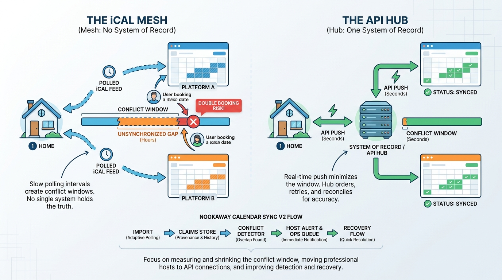

Part II — SUPPLY: Properties, Homes and the Partners Behind Them
One Home, Many Calendars: iCal, APIs and Multichannel Hosts

Image generated by Google Gemini (gemini-3-pro-image-preview)
Part II — SUPPLY: Properties, Homes and the Partners Behind Them

Image generated by Google Gemini (gemini-3-pro-image-preview)